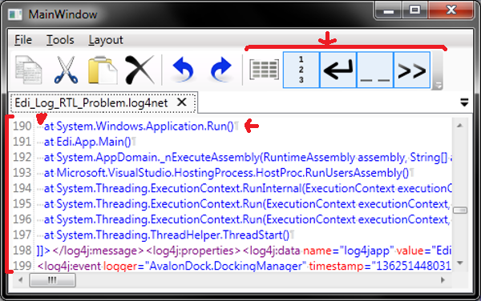

Introduction
The AvalonDock [2.0] series of articles continues and you are reading part 4. In this installment we are going to talk about using text related options in AvalonEdit. This includes the usage of WordWrap and the display of line numbers, -and continues to show how AvalonEdit can be setup toward text style rules, such as, using or not using spaces, tabs, their size etc.

Prerequisite
Be sure to download and continue the sample from the previous tutorial's step 3 [1] if you want to follow this article as I talk us through it.
Word Wrap and Line Number Indicator
In this section we are going to explore how word wrap and the display of line numbers can be switched on and off in AvalonEdit. This switching is done via a command handler that will accept five different parameters defined through an enumeration and we use CLR properties to give the view a chance for displaying the current state of each setting. We adjust our document viewmodel with new properties first, add a new command, and bind to the new properties later on.
Add a WordWrap and ShowLineNumbers boolean property into the FileViewModel class (I am showing only the WordWrap since ShowLineNumbers is very similar)
#region WordWrap
private bool mWordWrap = false;
public bool WordWrap
{
get
{
return this.mWordWrap;
}
set
{
if (this.mWordWrap != value)
{
this.mWordWrap = value;
this.RaisePropertyChanged("WordWrap");
}
}
}
#endregion WordWrap
Add a WordWrap and ShowLineNumbers toggle command in the Workspace class. This command accepts a ToggleEditorOption enumeration that is also defined in the namespace of the Workspace class. The command will be extended further below in this article. So, here is the enumeration:
public enum ToggleEditorOption
{
WordWrap = 0,
ShowLineNumber = 1,
ShowEndOfLine = 2,
ShowSpaces = 3,
ShowTabs = 4
}
And here is the code for the new command:
#region ToggleEditorOptionCommand
RelayCommand _toggleEditorOptionCommand = null;
public ICommand ToggleEditorOptionCommand
{
get
{
if (this._toggleEditorOptionCommand == null)
{
this._toggleEditorOptionCommand = new RelayCommand((p) => OnToggleEditorOption(p),
(p) => CanToggleEditorOption(p));
}
return this._toggleEditorOptionCommand;
}
}
private bool CanToggleEditorOption(object parameter)
{
if (this.ActiveDocument != null)
return true;
return false;
}
private void OnToggleEditorOption(object parameter)
{
FileViewModel f = this.ActiveDocument;
if (parameter == null)
return;
if ((parameter is ToggleEditorOption) == false)
return;
ToggleEditorOption t = (ToggleEditorOption)parameter;
if (f != null)
{
switch (t)
{
case ToggleEditorOption.WordWrap:
f.WordWrap = !f.WordWrap;
break;
case ToggleEditorOption.ShowLineNumber:
f.ShowLineNumbers = !f.ShowLineNumbers;
break;
default:
break;
}
}
}
#endregion ToggleEditorOptionCommand
No we add a WordWrap and ShowLineNumbers button in MainWindow.xaml to give the user an interface. Using the ToggleEditorOption enumeration requires to declare its namespace in XAML:
xmlns:vm="clr-namespace:Edi.ViewModel"
Here is the declaration for both buttons:
<ToggleButton ToolTip="Click this button to switch word wrap on or off"
CommandParameter="{x:Static vm:ToggleEditorOption.WordWrap}"
Command="{Binding ToggleEditorOptionCommand}"
IsChecked="{Binding ActiveDocument.WordWrap, Mode=OneWay, UpdateSourceTrigger=PropertyChanged}">
<Image Height="32" Source="/Edi;component/Images/App/ShowWordWrap32.png" />
</Togglebutton>
<Togglebutton ToolTip="Click this button to switch display of line numbers on or off"
CommandParameter="{x:Static vm:ToggleEditorOption.ShowLineNumber}"
Command="{Binding ToggleEditorOptionCommand}"
IsChecked="{Binding ActiveDocument.ShowLineNumbers, Mode=OneWay, UpdateSourceTrigger=PropertyChanged}">
<Image Height="32" Source="/Edi;component/Images/App/ShowLineNumbers32.png" />
</togglebutton>
Add a WordWrap and ShowLineNumbers binding into the AvalonEdit statement in the MainWindow.xaml:
<avalonEdit:TextEditor
Document="{Binding Document, UpdateSourceTrigger=PropertyChanged}"
SyntaxHighlighting="{Binding HighlightDef}"
IsModified="{Binding Path=IsDirty, Mode=TwoWay, UpdateSourceTrigger=PropertyChanged}"
IsReadOnly="{Binding IsReadOnly}"
WordWrap="{Binding Path=WordWrap, Mode=TwoWay, UpdateSourceTrigger=PropertyChanged}"
ShowLineNumbers="{Binding Path=ShowLineNumbers, Mode=TwoWay, UpdateSourceTrigger=PropertyChanged}">
...
</avalonEdit:TextEditor>
Add Edit Text Options support
This section gives an introduction to setting up some basic text options, such as,
the usage of spaces and tabs.
Add a TextOptions property into the FileViewModel class
(note the declaration in the constructor of the TextEditorOptions class - it replaces tabs with two spaces and switches tabs off in the editor):
#region TextEditorOptions
private ICSharpCode.AvalonEdit.TextEditorOptions mTextOptions
= new ICSharpCode.AvalonEdit.TextEditorOptions()
{
ConvertTabsToSpaces= false,
IndentationSize = 2
};
public ICSharpCode.AvalonEdit.TextEditorOptions TextOptions
{
get
{
return this.mTextOptions;
}
set
{
if (this.mTextOptions != value)
{
this.mTextOptions = value;
this.RaisePropertyChanged("TextOptions");
}
}
}
#endregion TextEditorOptions
We can use the same ToggleEditorOptionCommand as we used before by extending the corresponding enumeration and handling the new cases in OnToggleEditorOption method listed above:
case ToggleEditorOption.ShowSpaces:
f.TextOptions.ShowSpaces = !f.TextOptions.ShowSpaces;
break;
case ToggleEditorOption.ShowTabs:
f.TextOptions.ShowTabs = !f.TextOptions.ShowTabs;
break;
case ToggleEditorOption.ShowEndOfLine:
f.TextOptions.ShowEndOfLine = !f.TextOptions.ShowEndOfLine;
break;
Now lets add the toggle buttons into the MainWindow.xaml toolbar.
You will notice that we can bind directly to the TextOptions properties's sub-property. This spares us implementing another FileViewModel property for each setting.
<ToggleButton IsChecked="{Binding ActiveDocument.TextOptions.ShowEndOfLine, Mode=OneWay, UpdateSourceTrigger=PropertyChanged}"
Command="{Binding ToggleEditorOptionCommand}"
CommandParameter="{x:Static vm:ToggleEditorOption.ShowEndOfLine}"
ToolTip="Highlighted end of line in text (toggle on/off)">
<Image Source="/Edi;component/Images/App/ShowEnter32.png" Height="32"/>
</ToggleButton>
<ToggleButton IsChecked="{Binding ActiveDocument.TextOptions.ShowSpaces, Mode=OneWay, UpdateSourceTrigger=PropertyChanged}"
Command="{Binding ToggleEditorOptionCommand}"
CommandParameter="{x:Static vm:ToggleEditorOption.ShowSpaces}"
ToolTip="Highlight spaces characters in text (toggle on/off)">
<Image Source="/Edi;component/Images/App/ShowSpaces32.png" Height="32"/>
</ToggleButton>
<ToggleButton IsChecked="{Binding ActiveDocument.TextOptions.ShowTabs, Mode=OneWay, UpdateSourceTrigger=PropertyChanged}"
Command="{Binding ToggleEditorOptionCommand}"
CommandParameter="{x:Static vm:ToggleEditorOption.ShowTabs}"
ToolTip="Highlight tab characters in text (toggle on/off)">
<Image Source="/Edi;component/Images/App/ShowTab32.png" Height="32"/>
</ToggleButton>
Add a text options property in MainWindow.xaml binding
<avalonEdit:TextEditor
Document="{Binding Document, UpdateSourceTrigger=PropertyChanged}"
SyntaxHighlighting="{Binding HighlightDef}"
IsModified="{Binding Path=IsDirty, Mode=TwoWay, UpdateSourceTrigger=PropertyChanged}"
IsReadOnly="{Binding IsReadOnly}"
WordWrap="{Binding Path=WordWrap, Mode=TwoWay, UpdateSourceTrigger=PropertyChanged}"
ShowLineNumbers="{Binding Path=ShowLineNumbers, Mode=TwoWay, UpdateSourceTrigger=PropertyChanged}"
Options="{Binding TextOptions}">
...
</avalonEdit:TextEditor>
Conclusions
It is not too hard to use MVVM with
AvalonDock [2.0] and AvalonEdit. The next part will introduce a more advanced
feature like scaling of the font via combobox in the scrollbar space (as
you might have seen it in Visual Studio 2010). After that we shall look at
theming and explain how items, such as, hyperlinks can be themed using a technique that I call themable highlighting.
I would like to see your feedback. Please tell me if you have additional input, -if you find something wrong, or miss-leading.
History
- 31.03.2013 Created first version of this article